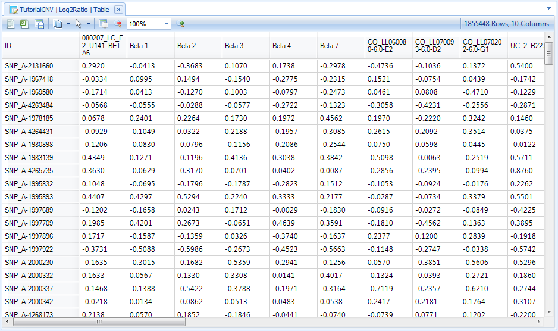
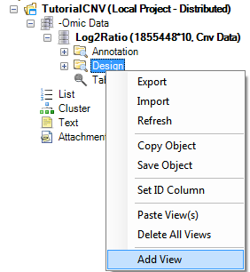
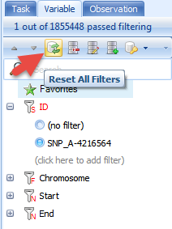
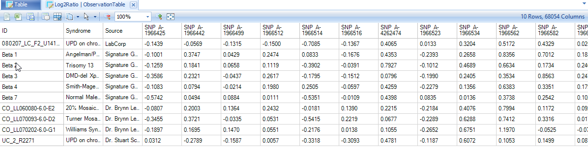
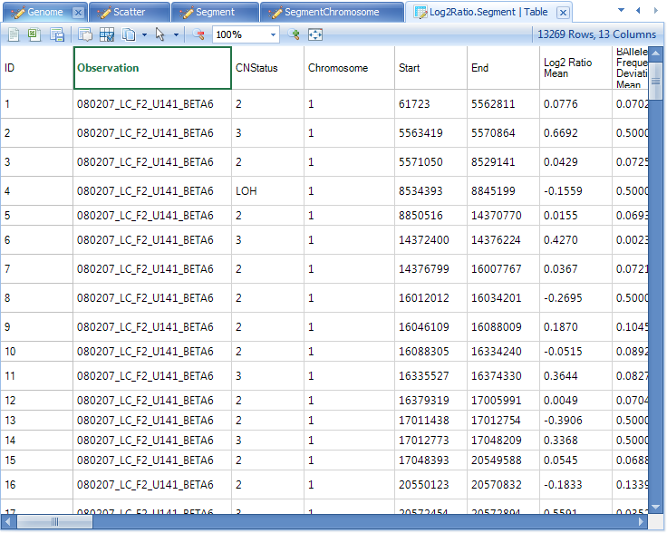

Visualization of Data
The TableView
Upon import, Array Studio will automatically generate a TableView for the CNV data.
The TableView in Array Studio can easily display millions of rows or columns. In this view, each observation is in a column, while each variable is a row. Copy Number information is shown in each cell. First, take a look at the Log2Ratio data. If you have not already done so, double-click the Table view for the Log2Ratio data from the Solution Explorer.
Scroll through the data now to see the speed that Array Studio can display data. Notice that this Tableview contains the Log2Ratio data, extracted from the CNCHP files, for each variable.

Please refer to Microarray Tutorial for different options and filters for table view.
The ObservationTableView
Besides the regular TableView, where each row represents a variable and each column represents an observation, Array Studio also offers the ObservationTableView. In this view, each column represents a variable, while each row represents an observation. Array Studio can easily handle millions of columns in this view.
To add an ObservationTableView to the imported dataset, click the Add View  button from the toolbar.
button from the toolbar.
Alternatively and usually preferred for quick opening of new views for different data or table objects, the user can right click on the dataset or table in the Solution Explorer for the relevant data or table object.
For instance, to open a new view for Log2Ratio data, the user could right-click on Log2Ratio and choose Add View, as shown below. Note: for Data object types, the user can also open new views for Annotation or Design as well (see figures below—for information purpose only, not necessary for this tutorial).

Similarly, to add a view for the Annotation Table under the Log2Ratio, right click on the Annotation icon in the Solution Explorer and select Add View.

The same can be done for adding a view for the Design icon as shown below.

If you have not already done so, click the Add View  button from the toolbar to open the Select Data window.
button from the toolbar to open the Select Data window.

Select Log2Ratio and click OK.
For each different type of imported dataset in Array Studio, different views are available. Some of these different types of views will be discussed in the tutorial.
For Log2Ratio data, available views include B-AlleleFrequencyTableView, BoxPlotView, FullTableView, GenomeView, HeatmapView, ObservationTableView, PairwiseScatterView, RBoxPlotView, RegionView, ScatterView, SnpTableView, TableView, VariableTableView, and VariableView.
Notice that the preview window shows the user a basic preview of that view as you scroll through each option. Choose ObservationTableView now, and click OK to continue.

After adding the view, a new view is called "ObservationTable" appears in the Solution Explorer, under the dataset that was selected above.

In addition, this new view is opened in the main view window. The user can switch between different opened views by using the tabs at the top of the screen. This provides a fast mechanism for switching between views.

As you can see, a new ObservationTableView is now visible, where each column represents a variable, and each row represents an observation. The first several columns show the design information for each subject, as shown below.

The View Controller, found on the right-hand side of the screen in Array Studio, contains tabs that allow the user to customize each view, by changing options using the Task tab, or filtering the data (using the Variables or Observations tabs).
The Task tab for the ObservationTableView is shown below.

To filter for a particular marker, or CNV, click the Variable tab to switch to the Variable filter.
The Variable filter will contain one filter for every column in the Annotation Table. By default, Affymetrix .CEL imported files have annotation for ID, Chromosome, Start, End.
Expand the ID column, and enter the marker SNP_A-4216564.

Notice that when filtered, the View Controller provides feedback as to how many variables passed filtering. Also, notice that the view has automatically been filtered to only show the variable SNP_A-4216564, as well as the attached covariate information. This table can easily be exported to Excel or a text file, using the buttons available on the toolbar.

To remove any current filters on the dataset, manually click the (no filter) button for each filter (in this case just ID) or click the Reset All Filters button in the toolbar of the View Controller to show all variables.
Reset all filters now.

Besides filtering for a specific marker, we can also filter by chromosome and base pair position. Expand the Chromosome filter as well as the Start and End filters now.
Unlike the ID filter, the Chromosome filter shows radio buttons by default (instead of a string filter). For columns that contain limited number of levels (i.e. chromosome), users will have the choice of using String Filter, Radio, or CheckBox. Right-clicking on Chromosome will bring up a choice so the user can change the type of filter.
Now right click on Chromosome and click on Check None, which make it easier to select a few chromosomes. Select Chromosome 1. Alternatively, you can simply right-click on Chromosome 1 and select the option Check This Only.
For the Start filter, enter ">150mbp" now.

Notice that the view is updated to show only the variables that correspond to this filter.
Switch back to the regular TableView for the Log2Ratio dataset to see that every view for that dataset has been updated for the filter. This is an important feature in Array Studio. Filtering one view of a dataset will also filter the other views of that same dataset. In other words, the Filtering is linked among views.

Reset any filters by clicking the Reset All Filters  button in View Controller now.
button in View Controller now.
The Details Window
Array Studio includes a feature called Details on Demand. In most views, selecting objects in the view will show details about that object (i.e. row, column, data point), in the Details Window (at the bottom of the screen).
Click on a marker in the row header of the TableView, and notice that the variable name changes to green. This indicates that this row has been selected, and information is available in the Details window.

The Details Window should be visible at the bottom of the screen, but if it is not, switch to it by selecting Show Details Window from the View menu. Note that all of the annotation information for the selected row or rows is shown in the Details Window.
The Details Window can also be used to show information about a particular subject. Click the header row of one of the subjects now.

Note that the Details Window is automatically updated with the design information about that subject.
Segmenting Data
Before continuing the investigation of the GenomeView data, we are going to take a moment and generate segment data for our Log2Ratio ratio.
To begin segmentation, go to the CNV Menu | CNV Segmentation.

This brings up the Segmentation window. The user has the option of fine-tuning the segmentation algorithm, although Omicsoft recommends the set of parameters that have been tested to work effectively. Make sure that the Project is Tutorial CNV and that the Data is Log2Ratio.

The user can select from the following Options:
-
Heuristic search p-value cutoff the initial search for segments—decreasing this will decrease the number of segments, while increasing this will increase the number of segments).
-
After finding all possible boundaries, the segmentation algorithm will merge contiguous regions if the difference between regions does not meet or exceed the Significant segment p-value cutoff (decreasing this will decrease the number of segments, while increasing this will increase the number of segments).
-
A new segment will be created only if the difference is larger than Minimal difference of log2Ratios.
-
A new segment will be created only if the number of markers is larger than the threshold set by Minimal marker number.
-
The user can choose to Identify copy neutral LOH segments, and can set criteria:
-
Homozygosity rate cutoff (%)
-
Minimal marker number
-
Minimal span (MB)
-
-
The user can optionally Append design columns to the output table (useful for filtering or if exporting the segment report).
-
User can decide whether to use start position for segmentation end coordinates. The end coordinate of a segment can either be the start or the end position of the last marker.
-
The user can predict copy number based on one of the following three choices:
-
Estimate based on Log2Ratio value: Copy Number = round(2^(Log2RatioMean + 1), example:
-
When Log2RatioMean = 0, Copy Number =2
-
When Log2RatioMean = -1, Copy Number = 1
-
When Log2RatioMean = 0.32, Copy Number = 3 (rounded)
-
When Log2RatioMean = 1, Copy Number = 4
-
-
Estimate based on B-Allele Frequency. This option will only work well for Illumina data.
-
Call Loss/Gain/Amplification/Deletion based on Log2Ratio values, see details here
-
Under the More Options tab, the following window is presented:

Calling Options include:
-
If the Log2Ratio is close to zero, then there is No Change? in copy number. User can set the cutoff for positive Log2Ratio or negative Log2Ratio
-
Minimal supporting marker# for BAF based calling
-
Minimal supporting marker% for BAF based calling
-
Log2Ratio Threshold to call amplification and deletion
-
Calling options for B-Allele Frequency is only effective when a user chooses to estimate copy number based on B-Allele Frequency
Click Submit to begin the segmentation. This should take approximately 10 seconds per sample (100 seconds).
After the segmentation is complete, a new Genome view will be generated under -Omic Data section and new data will be generated under Table | Segment | Log2Ratio.Segment. Also, a ScatterView will be created showing Log2Ratio.Mean vs. AlleleDifference.Mean, and this scatter view can be used to examine the segmentation patterns and calls.

Double-click the Table view for Segment data now to make it visible in the main view window.
Each row of the table corresponds to a segment and includes detailed annotation information for each segment. This table will be used in other visualizations and analysis. It can also be edited to create new segments, using some of the visualizations and analysis in Array Studio.

Next, click on the Scatter view for Log2Ratio.Segment in the Solution Explorer to open the Scatter View showing the Log2Ratio.Mean vs. BAlleleFrequencyDeviation.Mean. By default, this graph is trellised by observation, so there should initially be 10 charts shown, one for each observation in the experiment. The user can change the trellising by using the Task tab in the View Controller, and choosing Trellis by Row Covariate. Switching to the Legend in the View Controller will show a Legend for the different colors.
Individual segments can be selected, and the segment can be removed using the Remove Segment option under Task tab of the View Controller.

Note: The user can easily change the colors of the points in the plot or the column properties by right clicking in the Legend.

The GenomeView and Loss of Heterozygosity
The GenomeView can be used to interrogate regions for Loss of Heterozygosity, and the sample dataset provides a nice demonstration of these features.
First, switch to the Genome view under the Solution Explorer | Omic data section.

The initial view shows the Log2Ratio data and the segment data, for the chip 080207_LC_F2_U141_BETA6 on chromosome 1, plotted against the chromosomal location of each data point on the X-axis. This view is completely interactive, so selecting an individual point on the graph will show information about that CNV in the Details Window.
Notice that there are 500 charts in this view. This is because the GenomeView includes both a Log2Ratio chart and a B-Allele Frequency chart for each of the 25 chromosomes and each of the 10 samples. A third chart, for visualizing LOH scores, is also available but not shown by default.
Note: to have the B-Allele Frequency chart generated, the option to "Estimate B-Allele Frequency" must have been selected when initially uploading the data to the CNV module.
Using the View Controller and the Variable and Observation filters, we can filter for specific chips and chromosomes. We know from our design information that the chip UC_2_R2271, contains a Copy-Neutral LOH, or uniparental disomy (UPD), on chromosome 15. So, let’s filter for this now.
First, switch to the Observation tab in the View Controller. Expand the ID filter, and type UC_2_R2271 to filter the views to only include that chip.

Next, go to the Variable filter. Set the Chromosome filter to Chromosome 15.

By default, our segmentation table has been automatically attached to our Log2Ratio data, and segments are indicated by different colors (use the Legend to see what each color represents. Right-click in the legend to change the coloring scheme). It is very clear that a large section of this chromosome has copy-neutral LOH, or UPD.

Any view in Array Studio can be easily opened in PowerPoint or Excel using one click. Click the Open Current View in PowerPoint button on the toolbar in the main view window to open the current chart in PowerPoint.


GenomeView and Copy Number Gain
To better visualize segments of copy number gain or loss, we will now take a look at sample Beta 2, and chromosome 13. Sample Beta 2 is a patient with Trisomy 13, so it should show an increased Log2Ratio across chromosome 13. To do this, we will need to change our Observation and Variable filters to this sample and chromosome.
First, switch to the Variable Filter in the View Controller to filter chromosome 13.
Next, switch to the Observation Filter in the View Controller to filter sample Beta 2.

This immediately updates the main view window, as shown below.

First, more than half of the chromosome is colored in a light red. Checking the legend, this indicates that there is a gain in copy number (Copy Number =3) for this segment. This makes sense since this patient has the disorder Trisomy 13.
Notice that for each segment, there is a red line across the entire chromosome. This indicates the average Log2Ratio. It’s clear in this example that the average Log2Ratio and B Allele Frequency are much higher than that in other samples.
As stated before, this view is completely interactive. Select all data points in a segment by just one clicking an empty portion of that segment:

Notice that the Details Window is updated with information about the selected segment.

Summary information about the selected region can be shown on demand. In the Task tab of the View Controller, click the Summary On Demand option now.

This opens the CNV Summary On Demand window. This provides basic statistical information about the selected region. For this particular region, we can clearly see that the Log2 Ratio mean is 0.3573, which is well above the expected value of 0.

Array Studio also supports editing of the segments using drag-and drop. Drag the side of a segment to expand or contract that segment. Merge multiple segments together by dragging across boundaries.
ChromosomeView For Segmentation Data
Array Studio also provides Chromosome View for visualizing segment data.
This view is trellised by chip, by default. So, there are initially 10 charts visible. For each chart, it shows any chromosome that has a segment (gain/loss). The legend indicates whether the segment contains a gain or loss (by default, red indicates gain, green loss, and blue indicates LOH).

Scroll through the charts until the chart for Beta 2 is visible, as shown below.
Once again, it is very clear that this patient has trisomy 13, as most of chromosome 13 shows a gain (CN 3).

As with all views in Array Studio, this view is interactive. Selecting a particular region of a chromosome will give additional information about that region. Now click on any region to select (highlighted in purple) and see the details in the Details window below.
In the example shown below, the segment from chromosome 13 was selected, and information about those segments is shown in the Details Window.